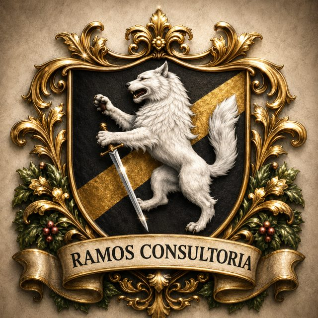

Decisões de pessoas com critério, não com achismo.
18 anos conduzindo seleção estratégica, mapeamento de competências e desenvolvimento humano para empresas que não podem errar na escolha de quem entra — ou de quem lidera.
Ferramentas para acelerar sua trajetória
Cursos, conteúdo e sistemas construídos a partir de 18 anos de prática real em recrutamento, seleção e desenvolvimento de pessoas.
Entrevista de Seleção por Competências
Você ainda entrevista no "feeling"? Então você ainda erra contratações — e a empresa está perdendo tempo e dinheiro.
Depois de 18 anos atuando com seleção, conduzindo processos de aprendiz até C-Level, aprendi uma coisa: contratar bem não é sorte, é método. É exatamente isso que ensino neste curso.
Você vai aprender na prática:
Para profissionais de RH que querem se tornar estratégicos e para gestores que precisam contratar melhor.
Acessar curso →O Segredo entre o Prazer e o Realizar
A neurociência te ajuda a entender a ligação entre o Prazer e o Realizar. Neste curso interativo você vai aprender a identificar e nomear suas emoções, sensações e sentimentos, explicado de forma didática e com profundidade.
Acessar curso →
Um Paciente Poderoso
E se os segredos mais antigos da humanidade não estivessem em livros sagrados, mas dentro da mente de um único paciente?
Hakol é grandioso, fascinante, repleto de poder e mistério — mas também marcado por fragilidades, contradições e dores íntimas. Léxis Lumen, terapeuta de escuta afiada e raciocínio investigativo, assume o papel de intérprete da alma, conduzindo sessões que se transformam em portais para a psicologia, a filosofia e as mitologias que moldaram civilizações inteiras.
Entre memórias que atravessam o Éden, a Babilônia e os mitos gregos e egípcios, e reflexões que desnudam os labirintos do ego humano, a linha entre história e delírio, mito e realidade, poder absoluto e fragilidade interior, se torna tênue demais para ser ignorada.
Mais do que uma narrativa, Um Paciente Poderoso é uma experiência que provoca o leitor a revisitar suas próprias crenças, sua identidade e a essência daquilo que chamamos de humanidade.
No fim, a pergunta inevitável se impõe: será que conhecemos de fato o universo — ou sequer a nós mesmos?
Comprar "Um Paciente Poderoso" — Robson RamosMapeamento de Competências
Um Sistema de Mapeamento de Competências é uma solução estruturada para identificar, avaliar e analisar conhecimentos, habilidades, atitudes e características comportamentais de profissionais ou candidatos.
A partir de questionários, entrevistas, avaliações comportamentais, evidências profissionais e critérios previamente definidos, o sistema compara o perfil avaliado com as competências exigidas para determinado cargo, nível de liderança ou contexto organizacional.
Ao final do processo, é emitido um relatório individual contendo os principais pontos fortes, competências mais desenvolvidas, aspectos que precisam de aprimoramento, nível de aderência ao perfil esperado e recomendações para desenvolvimento, seleção, promoção, sucessão ou movimentação de carreira.
O sistema oferece uma visão mais objetiva e estratégica sobre o potencial profissional, apoiando decisões de gestão de pessoas com maior consistência, transparência e segurança.
Acessar sistema →
Assessment HaroRamos
O Assessment HaroRamos é uma avaliação profissional voltada a pessoas que desejam ascender na carreira, compreender melhor seu potencial e tomar decisões mais estratégicas sobre seu futuro profissional.
Por meio de uma análise estruturada de competências, perfil comportamental, pontos fortes, oportunidades de desenvolvimento e objetivos de carreira, o profissional recebe um relatório psicológico completo, elaborado por psicólogo, com direcionamentos personalizados e próximos passos para evolução, reposicionamento, promoção ou transição de carreira.
Mais do que identificar características, o Assessment HaroRamos transforma autoconhecimento em um plano prático para alcançar sucesso, realização e crescimento profissional.
Agendar assessment →Robson Ramos
18 anos de atuação em RH, com foco principal em recrutamento & seleção, treinamento e diversidade — passagens por MetLife, Banco Safra, DPSP, Grupo DASA e Minerva Foods.
Formação em Biologia, Gestão de RH e Psicologia, com pós-graduação em Gestão de Pessoas, Neuropsicologia e Avaliação Psicológica aplicada à clínica. Autor do livro "Um Paciente Poderoso".
Mais de 1.000 horas de treinamentos e palestras, e mais de 8 mil pessoas contratadas até hoje.
Vivência pessoal como pessoa com deficiência visual subnormal, trazendo repertório real sobre inclusão, adaptações e acessibilidade para cada processo conduzido.

Em breve, conectado ao sistema de seleção
Esta área vai listar automaticamente as vagas em aberto assim que o sistema de mapeamento de competências estiver publicado — sem que você precise atualizar nada manualmente.
Quero ser avisadoPalestras e temas para reflexão
Palestras para sua empresa, escola ou eventos — conteúdos aplicados à realidade organizacional e à agenda atual de gestão de pessoas.
NR-1 na prática
Saúde mental, riscos psicossociais e responsabilidade organizacional.
Sinais de Burnout
Fatores de risco, prevenção e papel da liderança.
IA a serviço do colaborador
Uso ético e estratégico da inteligência artificial no trabalho.
Inclusão de PcD
Acessibilidade, vieses inconscientes e cultura inclusiva.
Geração Z
Valores, expectativas e diálogo intergeracional.
Inteligência Emocional
Autoconsciência, autorregulação e empatia aplicada ao trabalho.
Depressão e prevenção ao suicídio
Sinais de alerta e caminhos de apoio.
Senso de Dono
Responsabilidade, autonomia e comprometimento.
Vamos construir soluções com impacto?
Seleção estratégica de talentos, palestras, treinamentos e consultoria com visão prática de RH, inclusão e desenvolvimento humano.
Soluções para cada etapa da sua trajetória
Do primeiro ajuste no currículo à contratação de um executivo: cada serviço abaixo nasce de 18 anos de prática real em RH — e entrega resultado, não promessa.
Avaliação de Currículo
R$ 80,00Seu currículo tem menos de 10 segundos para convencer um recrutador — e a maioria é descartada antes disso. Aqui você recebe uma análise técnica e estratégica feita por quem já triou milhares de currículos do outro lado da mesa: clareza, posicionamento profissional, coerência de trajetória e aderência real às vagas que você quer. Você sai sabendo exatamente o que corrigir para parar de ser ignorado.
Avaliação de Perfil no LinkedIn
R$ 100,00O LinkedIn é onde os recrutadores caçam — e se o seu perfil não aparece, você não existe para o mercado. Revisão completa de headline, resumo, experiências, palavras-chave e marca pessoal, feita por um recrutador que sabe exatamente o que os filtros de busca e os olhos humanos procuram. O objetivo é simples: transformar seu perfil em um ímã de oportunidades.
Preparação para Entrevistas
R$ 260,00 / sessão (1h)Chegar à entrevista é só metade do caminho — é nela que a vaga se ganha ou se perde. Acompanhamento estruturado com postura, comunicação, storytelling de carreira, respostas estratégicas e simulações práticas conduzidas por quem já entrevistou de aprendiz a C-Level. Você treina com quem contrata, e chega à entrevista real preparado, confiante e com as emoções sob controle. Acima de 3 sessões, 5% de desconto.
Mapeamento de Competências
R$ 320,00Você sabe, com precisão, quais são seus pontos fortes — e o que está travando sua evolução? Diagnóstico de competências técnicas e comportamentais aplicado em sistema especializado, com identificação clara dos seus diferenciais e direcionamento prático para o próximo passo da carreira. Chega de evoluir no escuro: aqui você enxerga o mapa completo.
Aplicação de Assessment
R$ 600,00O nível mais profundo de autoconhecimento profissional: mapeamento comportamental com teste aplicado via sistema especializado, seguido de entrevista técnica individual e emissão de laudo profissional detalhado, elaborado por psicólogo. É o instrumento que executivos e empresas sérias usam para decidir promoções, sucessões e contratações — agora ao seu alcance para decidir o rumo da sua própria carreira.
Pareceres Diferenciados e Plano de Desenvolvimento
Todo processo conduzido aqui entrega mais do que um resultado: entrega um parecer técnico-profissional completo, destacando pontos fortes, riscos de contratação e as competências que o profissional precisa desenvolver para evoluir em carreira e performance. É o diferencial que transforma uma avaliação em um plano de ação.
Para empresas que não podem errar na contratação
Soluções completas em recrutamento, avaliação e movimentação interna — com prazo definido, garantia real e parecer especializado em cada entrega.
Posições Técnicas | Assistentes e Analistas
1x salário · garantia 3 mesesCondução completa de processos seletivos para posições operacionais e técnicas: mapeamento de perfil, triagem qualificada e entrevistas por competência — com apresentação de shortlist em até 7 dias úteis. Velocidade sem abrir mão de critério.
Posições Especialistas
2x salário · garantia 3 mesesSeleção de profissionais com conhecimento técnico aprofundado, avaliando experiência, aderência cultural, capacidade analítica e potencial de entrega. Shortlist estruturada em até 10 dias úteis — para a vaga que não pode ficar aberta nem ser mal preenchida.
Liderança | Coordenadores e Gerentes
15% sal. anual · garantia 120 diasUm líder errado custa uma equipe inteira. Processos seletivos voltados à gestão de equipes e resultados, com entrevistas aprofundadas, análise comportamental, visão estratégica e parecer executivo. Apresentação de shortlist em até 25 dias úteis.
Posições Executivas
20% sal. anual · garantia 180 diasAtuação confidencial e estratégica na identificação de executivos, líderes seniores e posições críticas. Assessment consultivo, análise de mercado e shortlist em até 30 dias úteis — com a discrição e a profundidade que decisões desse nível exigem.
Palestras para sua empresa, escola ou eventos
Conteúdo vivido, não teoria de slide. R$ 400,00/hora — cada tema aplicado à realidade organizacional e à agenda atual de gestão de pessoas.
NR-1 na prática
A nova NR-1 deixou de ser papel: saúde mental e riscos psicossociais agora são responsabilidade legal da empresa. Esta palestra traduz a norma para o dia a dia da gestão de pessoas, mostrando o impacto direto na sustentabilidade do negócio — e o que sua liderança precisa fazer antes que o problema vire passivo.
Sinais de Burnout
O burnout não avisa quando chega — mas dá sinais que quase ninguém sabe ler. Sinais de esgotamento, fatores de risco organizacionais e individuais, prevenção e o papel decisivo da liderança na construção de ambientes psicologicamente seguros. Sua equipe sai sabendo identificar, prevenir e agir.
IA a serviço do colaborador e da empresa
A inteligência artificial não vai substituir sua equipe — mas quem souber usá-la vai substituir quem não sabe. Uso ético e estratégico da IA para otimizar processos, apoiar decisões e elevar a experiência do colaborador, com exemplos práticos e aplicáveis desde o dia seguinte.
Inclusão de Pessoas com Deficiência
Sensibilização corporativa sobre acessibilidade, vieses inconscientes, adaptações razoáveis e cultura inclusiva — conduzida por quem vive a deficiência visual na prática e transformou essa vivência em repertório profissional. Não é discurso: é experiência real que muda a forma como sua equipe enxerga inclusão.
Senso de Dono
Por que algumas pessoas entregam e outras apenas cumprem horário? Reflexão prática sobre responsabilidade, autonomia, comprometimento e alinhamento entre expectativas e entregas — o convite que faz cada colaborador tratar o resultado como se fosse seu.
Temas humanos, atuais e de alto impacto
Para empresas, escolas e eventos — reflexão e desenvolvimento que tocam a vida real das pessoas.
Depressão e prevenção ao suicídio
Um tema que ninguém quer falar — e que por isso mesmo precisa ser falado, com responsabilidade e cuidado. Conscientização, identificação de sinais de alerta, quebra de estigmas e orientação sobre apoio e busca de ajuda, conduzido com a seriedade de quem une psicologia e vivência.
Geração Z
Eles já são o futuro da sua empresa — e a maioria dos líderes ainda não sabe conversar com eles. Compreensão de valores, expectativas e desafios da nova geração para fortalecer o diálogo intergeracional e reter talentos que pensam diferente.
A fuga para os vícios
Por trás de todo comportamento aditivo existe uma dor tentando ser silenciada. Discussão franca sobre comportamentos aditivos, fatores emocionais envolvidos e caminhos possíveis para mudança e recuperação — sem julgamento, com ciência e humanidade.
Inteligência Emocional
A competência mais exigida do século — e a menos ensinada. Desenvolvimento de autoconsciência, autorregulação, empatia e habilidades sociais aplicadas à vida e ao trabalho, com base em neurociência e exemplos que qualquer pessoa reconhece no próprio dia a dia.
Aprendendo com o passado
Seus erros podem ser seu maior professor — ou seu maior peso. A escolha é sua. Reflexões sobre experiências, erros, resiliência e crescimento pessoal como ferramenta de evolução, para transformar história vivida em combustível para o que vem.
Capacitações com aplicação prática
R$ 750,00/hora com materiais inclusos — foco em comportamento, processo e resultado. Sua equipe não assiste: pratica.
Inclusão em todos os ambientes
Treinamento prático para empresas e equipes sobre inclusão, diversidade, acessibilidade e respeito às diferenças — com dinâmicas reais e a autoridade de quem vive o tema na pele. Sua equipe sai sabendo agir, não apenas concordar.
Processo seletivo eficiente
Quanto custa uma contratação errada na sua empresa? Estruturação de processos seletivos assertivos, redução de vieses e decisões baseadas em critérios claros — o método de quem já contratou mais de 8 mil pessoas, entregue à sua equipe de RH.
Entrevistas por competência
Chega de contratar no "feeling". Técnicas de investigação, análise de evidências e avaliação consistente de candidatos — o treinamento que transforma entrevistadores em avaliadores estratégicos, com prática e simulação real.
Treinamento para profissionais PcD
Preparação para o mercado de trabalho com foco em carreira, autoconfiança, comunicação e protagonismo — conduzida por quem percorreu esse caminho e chegou à liderança em grandes empresas. Inspiração com método, não apenas motivação.
Eficiência usando inteligência emocional
Autocontrole emocional, tomada de decisão consciente e gestão das relações para aumentar foco, produtividade e qualidade das entregas. Porque equipe emocionalmente inteligente entrega mais, com menos desgaste.
Negocie diretamente comigo
Fale direto pelo WhatsApp para tirar dúvidas, fechar um serviço ou montar um pacote sob medida.
WhatsApp · 11 95060-4656